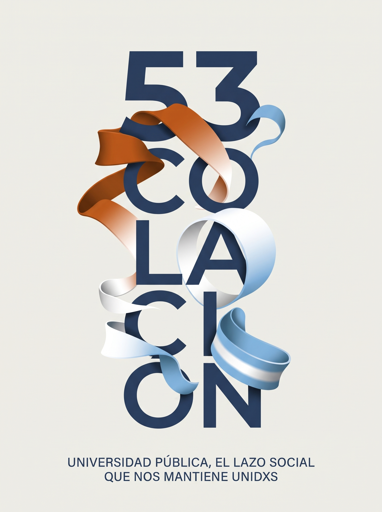

PROMOCIÓN 2025 — 2026
Un logro.
Muchos lazos.
Universidad pública,
el lazo social que
nos mantiene unidxs.
Celebramos un camino compartido.
53ª Colación de Pregrado, Grado y Posgrado.

FACULTAD DE CIENCIAS POLÍTICAS Y SOCIALESLO QUE APRENDEMOS NOS UNE
UN ENCUENTRO PARA CELEBRAR
Cada nombre,
una historia.
El programa, quienes nos acompañan
y quienes hoy empiezan una nueva etapa.
Todo el acto, en un mismo lugar.
Explorá las secciones o buscá en la nómina.
Cargando la guía…
No encontramos coincidencias.
Probá con un apellido, otro nombre o el nombre de la carrera.
Nómina de la promoción 2025–2026, según el expediente de la LIII Colación. Los nombres se presentan en orden alfabético por apellido.
53ª COLACIÓN · FCPyS · UNCUYO
El futuro también
se construye en común.